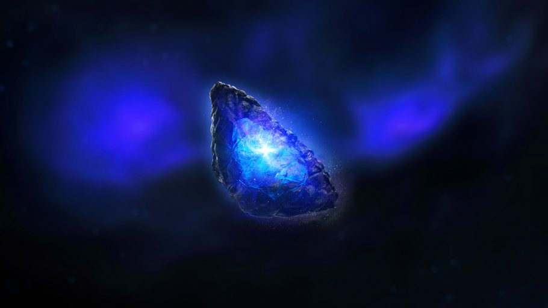

Joia do Espaço
Também foi chamada de Hypercube e Tesseract em diferentes filmes. Em Vingadores: Ultimato, após falhar em pegar o Tesseract ao voltar no tempo para a Batalha de Nova York, Capitão América e Homem de Ferro retornam à década de 1970, para pegar a Joia na S.H.I.E.L.D. Assim como as demais, a Joia é devolvida ao seu período de tempo. Na linha do tempo principal, as Joias foram destruídas.
O Tesseract é nomeado por sua aparência similar a um cubo e é capaz de prover acesso instantâneo a qualquer lugar do universo se utilizado corretamente. O elemento único que compõe o Tesseract também foi utilizado para criar armamento avançado por raças como os Humanos. Esta joia teve um papel importante no desenvolvimento da humanidade durante o início da era dos super-heróis, atraindo a atenção de forças como o Caveira Vermelha e Thanos, ambos procurando utilizar o poder do Tesseract para suas próprias intenções nefastas. É mais tarde revelado que o cubo é uma unidade de contenção construída ao redor da verdadeira Joia do Infinito, para que a mesma pudesse ser segurada e controlada com segurança. Na visão de Thor, o Tesseract é quebrado para revelar a Joia do Espaço azul contida dentro dele.
A joia do espaço concede ao portador, a capacidade de se teleportar para qualquer lugar do universo em instantes através de um portal de névoa com brilhos azuis. Além de teletransporte, que é o seu poder principal, a joia também tem poderes de telecinese avançada a ponto de puxar uma lua, criar buracos negros, campos de força altamente resistentes e tornar a matéria intangível
Quem já usou:. Thanos, Caveira Vermelha, Loki, Hulk, Homem de Ferro, Thor e Capitã Marvel.